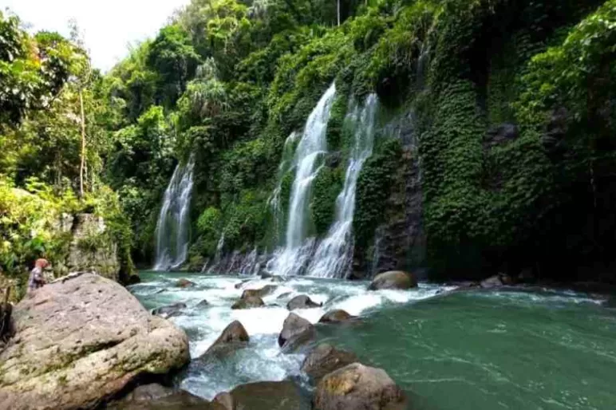

Air Terjun Curup Maung
Air Terjun Curup Maung adalah destinasi alam memukau yang terletak di Desa Rinduhati, Kecamatan Gumay Ulu, Kabupaten Lahat, Sumatera Selatan, dengan ketinggian sekitar 80 meter dan aliran air bertingkat yang membentuk tirai putih alami di tengah tebing hijau dan berlumut. Dikenal sebagai "curup harimau", tempat ini menawarkan suasana sejuk dan menenangkan yang cocok untuk pelarian dari hiruk pikuk kota. Akses menuju lokasi cukup mudah dengan perjalanan darat dari Kota Lahat atau Palembang, lalu dilanjutkan dengan trekking menurun selama 30 hingga 60 menit melewati hutan dan kebun kopi. Di lokasi, pengunjung bisa menikmati aktivitas seperti berenang ringan, berfoto di atas batu besar atau hammock, serta bersantai sambil menikmati udara segar. Fasilitas pendukung seperti toilet, musala, tempat sampah, dan area parkir tersedia di sekitar pintu masuk, dan menariknya, tempat ini tidak memungut tiket masuk, hanya retribusi parkir yang sangat terjangkau.
Kembali